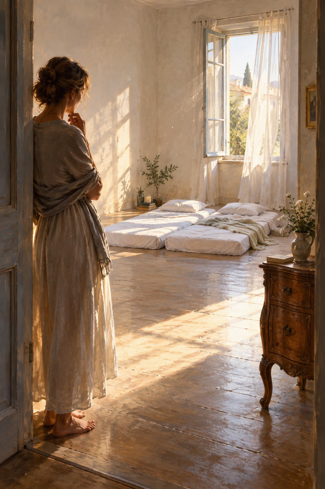

לעיתים החלום מגלה אמת שקשה לראות בעֵרוּת. השיר הזה מתבונן בפשטות, בריקנות שאינה חסר, ובאפשרות למצוא שקט דווקא במקום שבו אין צורך להחזיק בדבר.
ירדתי אל שכניי בחלום
ולא היו בו דברים.
לא כורסאות זוכרות שנים,
לא מדפים עמוסי סיפורים,
לא חפצים אוחזי זמן.
רק צמד מזרונים
בחלל ריק
ולב שקט
שגר ביניהם.
עמדתי שם,
מופתעת מן החסר,
ואז ההבנה העמוקה,
הִדהדה בי:
אין כאן חסר כלל!
החלל לא ביקש להתמלא.
הריקנות לא כאבה,
היא נשמה.
בחלומי,
חשבתי להביא שידה ישנה,
מעט מן העבר,
מהמשקל שקוראים לו בית.
אבל החלל היה להם בית.
בלי העץ,
בלי מגירות,
בלי צורך לשמור דבר.
חזרתי אל ביתי
ועיניי עברו בין כל הדברים
שאגרתי כדי לזכור,
כדי להיות,
כדי לא לאבד.
ואז חלחלה בי ההבנה:
השקט אינו גר בין החפצים.
איכותו של הכד בריקנותו.
האושר משאיר שובל של זיכרון בחפצים
וממשיך הלאה.
כמו אור הנכנס וממשיך,
כמו נשימה בין שתי מילים
היוצרות הבנה,
האושר אינו מחפש דבר
מלבד חלל לחלוף בו.